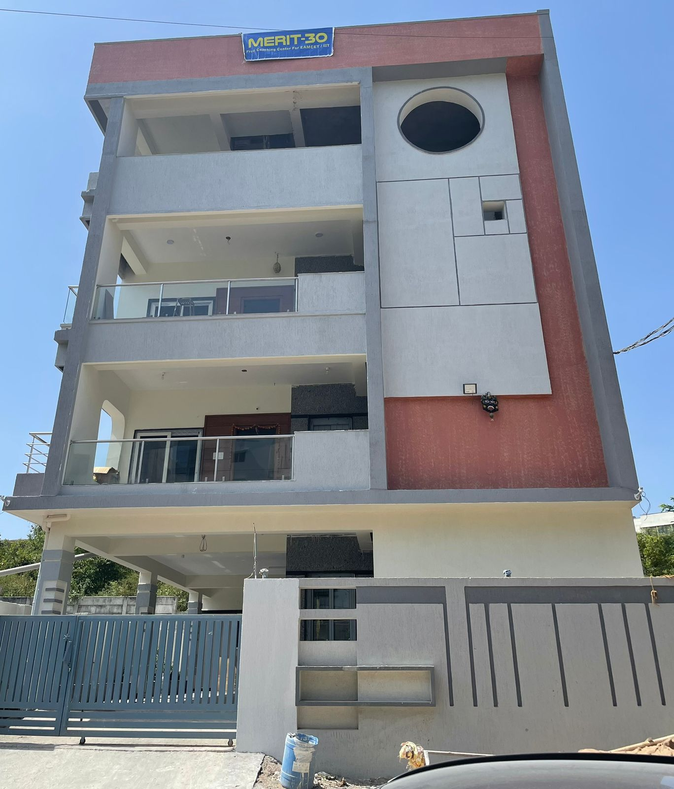

Free EAMCET Coaching
- Admission: only for govt schools children from 8th to 12th
- Courses: Maths and Science
- Everyday Timings: 12 hours a week, 4 days a week(Mon-thu or fri-sun), every day from 4.30pm to 7.30pm immedietly after school on weekdays. quick lunch and free transport is provided if the school is not nearby.
- Pre-Merit-30 Batch(8th class to 10th): Free coaching and study material is provided for 8th-10th classes, directly attending after school. 12 hours of coaching for Maths & Science subjects with regular exams are conducted per week.
- Merit-30 Batch(10th to 16th): EAMCET coaching is provided for 11th-12th classes, this is only for the students who have attended the Pre-Merit-30 Batch, every day from 5.30pm to 8.30pm. Additionally, Top 30 students from Pre-Merit-30 batches will be provided scholarship of paying full college fees from 11th till engineering to make the education completly free.
Current Status:
Currently around 100 students from the following three ZPHS schools are attending EAMCET coaching:- Nizampet ZPHS school(60 students, distance=1.8km): Nizampet ZPHS to Center.
- Hydernagar ZPHS school(25 students, distance=3km): Hydernagar ZPHS to Center.
- Bachpally ZPHS school (14 students,distance=5.6km) Bachupally ZPHS school to center
Future Expansion:
In future, planning to expand nearby , Nearby ZPHS schools: 10 ZPHS schools surrounding to the center.- Pragathi-Nagar ZPHS school : (distance=5km) Pragathi Nagar ZPHS school
- Shamshiguda ZPHS school (distance=4.7km) Shamsiguda ZPHS school
- Miyapur ZPHS school:(distance=4.3km) Miyapur ZPHS school
Founder:
TejaRevanth Foundation is NGO founded by Janardhana Reddy Naredula in the year 2002 ,Currently working in Mircrosoft.From 2022-current:(Hyderabad)
|
|
|
| EAMCET Free coaching batch-1(Monday to Thursday). | |
|
 |
|
| plot 784-MIG, Mayuri Nagar, near sbi, Miyapur, hyderabad 500049. ). |

From 2008-2022 (Bangalore)
Financial help was provided to the students in Sarasvathi Education school (Kaggadaspura, C.V.Raman Nagar, Bangalore). Partial school fees were directly paid to the school for economically backward students.From 2002-2008 (Kurnool)
In 2002, a new center opened to provide free food, accommodation & schooling for 150 orphan students in Kurnool town, Andhra Pradesh.|
OUR LEGACY TOWARDS SOCIAL SERVICE in Kurnool: 2002-2008 |
|
|
|
|
|
School Hostel in Kurnool (2002-2008) |
2002-2008 |
|
NEWSPAPER CLIPPINGS |
|
|
School & Hostel in Kurnool (2002-2008) |
|
|
|
|


TejaRevanth Foundation:
E-Mail: teja.foundation@gmail.com
Mobile: 9663847082
Address: H.No: 784-MIG, Mayuri Nagar, Miyapur, Hyderabad-500049